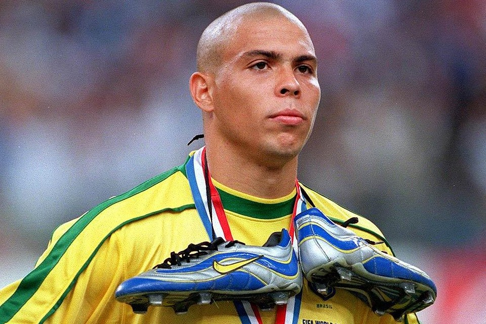
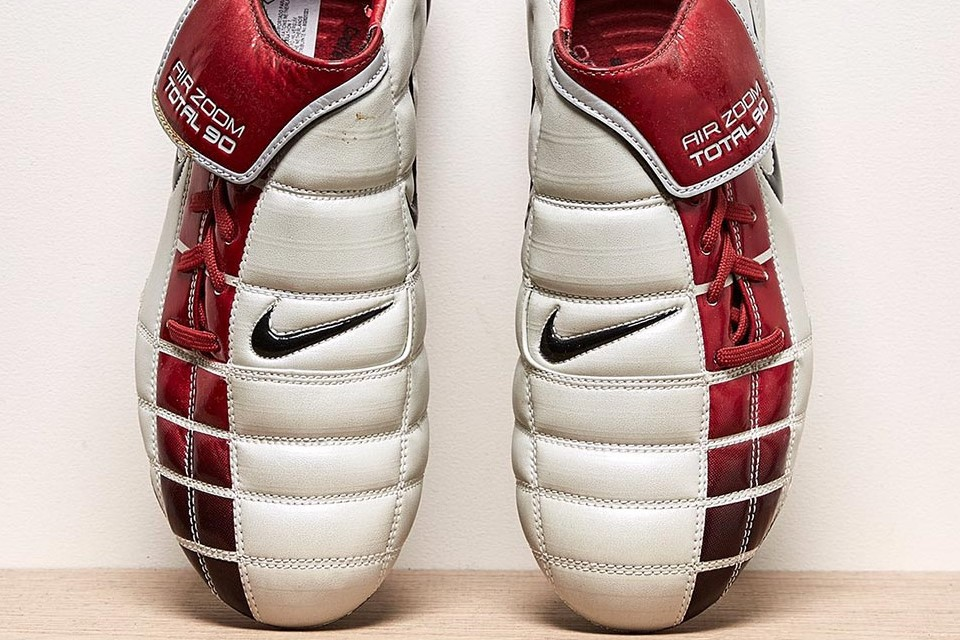
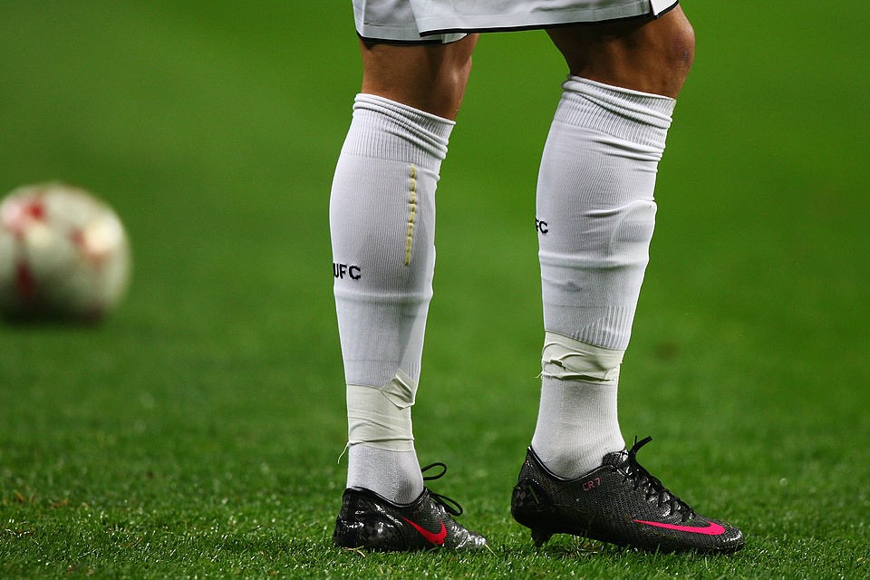

O responsável por essa chuteira ser um sucesso de vendas e se popularizar tanto se chama Ronaldo Fenômeno. Em 1998, o atacante brasileiro estava nos holofotes do futebol mundial e era um astro do esporte, e foi na Copa do Mundo daquele ano que ele estreou a chuteira.
Mais uma que está entre as chuteiras da Nike que mais fizeram sucesso é um dos xodós dos brasileiros: Air Zoom Total 90 II. Ela foi lançada em 2002 e chamou muita atenção porque revolucionou com sua tecnologia e design super diferenciados. É uma chuteira que trouxe muito conforto para os amantes do futebol.
Feita em fibra de carbono e super leve (apenas 185 gramas), a Nike Mercurial Vapor SL possui uma tecnologia de ponta e foi um dos modelos de mais sucesso já lançados pela marca. Cristiano Ronaldo, Didier Drogba e Theo Walcott são alguns dos craques que vestiram esse par de chuteiras da Nike.
